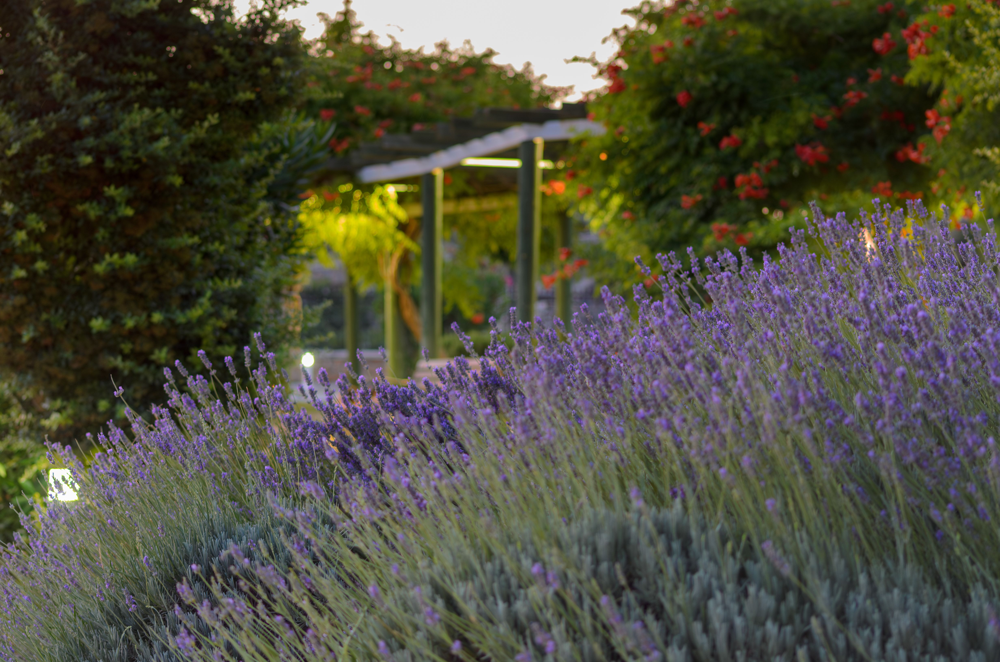
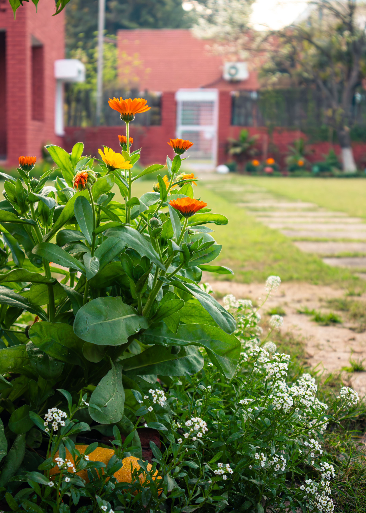
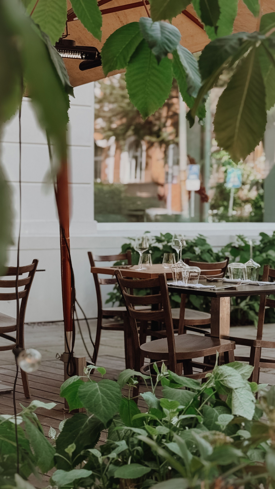

In This Article
Choosing a small tree requires more than finding an attractive young specimen. This guide explains how to evaluate space, mature size, climate, soil, placement, maintenance, and design so that the tree can remain an asset to the garden for years.
Introduction
A small tree can completely change a home garden. It can provide structure, seasonal interest, moderate shade, privacy, flowers, attractive foliage, or a focal point that makes the entire landscape feel more established. In a compact space, however, choosing the wrong tree can also create years of unnecessary pruning and conflicts with walls, paths, windows, and other plants.
The key is to choose for the mature garden rather than for the nursery display. A young tree may occupy very little space today, but its crown and roots will develop over time. Before buying, compare the mature dimensions and growing requirements with the real conditions of your property.
Evaluate the available space
Measure more than the patch of soil where the trunk will stand. Look at overhead clearance, walls, windows, fences, paths, seating areas, utility lines, and neighboring plants. In a small garden, every meter matters, and the mature crown needs enough room to develop without becoming a permanent obstacle.
Think about mature size
Height is only part of the picture. Crown width, branching habit, and root development also matter. A tree can remain relatively short and still spread widely. Check reliable information about mature dimensions and remember that local climate and growing conditions can influence final size.
Define the purpose of the tree
Decide what you want the tree to contribute. Is the priority light shade, flowers, privacy, seasonal color, wildlife value, screening, or a strong focal point? A clear purpose makes it easier to compare suitable species instead of choosing only by appearance.
Study sunlight throughout the day
Observe the proposed location in the morning, midday, and afternoon. Buildings, walls, fences, and existing plants can create changing patterns of sun and shade. Match the tree's requirements to the actual exposure rather than assuming the entire garden receives the same light.
Consider the garden's microclimate
A sheltered corner can behave differently from an exposed lawn. Walls may reflect heat, paved areas can become warmer, and wind can dry foliage and soil more quickly. These small environmental differences influence which tree is most likely to thrive in a particular position.
Check climate suitability
Choose a species or cultivar that can handle the temperatures and seasonal conditions typical of your region. A beautiful tree that struggles with local heat, cold, humidity, or rainfall may demand constant intervention and still perform poorly.
Understand the soil
Soil texture, drainage, compaction, and available rooting space influence establishment. Observe what happens after rain and consider whether the soil stays saturated or dries very quickly. A suitable species matched to the existing conditions is often easier to maintain than one that requires continual correction.
Prepare the planting area
Remove major debris and make sure the site is appropriate before planting. The goal is to allow roots to establish into the surrounding soil rather than remain confined to a small pocket. Follow suitable planting guidance for the species and local soil conditions.

Leave appropriate distance from structures
Think ahead to the mature crown and roots. Give the tree reasonable separation from walls, fences, paving, doors, windows, and other permanent features. Appropriate spacing improves access and reduces the likelihood that repeated corrective pruning will be needed later.
Consider underground services
What is below the ground matters as much as what is visible above it. Pipes, drainage systems, utilities, foundations, and other infrastructure can affect where planting is appropriate. When you are uncertain, obtain reliable information before digging.
Plan for establishment watering
Newly planted trees generally need closer moisture monitoring while roots establish. The exact schedule depends on species, weather, soil, rainfall, and season. Check actual soil conditions rather than assuming that every new tree needs the same amount of water.
Use mulch appropriately
An appropriate mulch layer can help reduce moisture loss and moderate soil conditions. Keep material away from direct contact with the trunk instead of piling it against the base. The objective is to support the root zone without creating a permanently damp collar around the trunk.
Prune with a purpose
Pruning should respond to a clear need and the natural growth habit of the tree. Removing damaged or problematic growth can be useful, but repeatedly cutting a tree because it is too large for its location indicates that the original selection or placement may have been unsuitable.
Inspect the tree regularly
Look at foliage, branches, new growth, the trunk, and soil conditions. Inspection after unusual heat, strong wind, heavy rain, or other stressful weather can be especially useful. Early observation makes it easier to notice changes and seek appropriate advice when necessary.
Think about seasonal appearance
Some trees are valued for spring flowers, others for autumn foliage, fruit, bark, or an attractive winter structure. Consider how the tree will contribute throughout the year rather than choosing only for the season in which you happen to visit the nursery.

Plan for leaf and fruit drop
Natural debris is part of living with a tree. Falling leaves or fruit may be perfectly acceptable in a planting bed but less convenient over a frequently used patio, pool area, or narrow path. Position the tree with routine cleanup in mind.
Use the tree as a focal point
A small tree can visually organize a garden. It may anchor a planting bed, frame a view from a window, or mark the transition between a patio and planted area. Give it enough visual space so that its form can be appreciated rather than crowding it among too many competing elements.
Combine it with compatible plants
Plants beneath and around a tree should tolerate the conditions that will exist as the crown matures. Shade may increase over time, and roots will occupy more of the surrounding soil. Select companions with compatible light and moisture requirements and leave room for development.
Avoid overcrowding
A newly planted garden can look sparse, which tempts people to fill every gap. Remember that trees, shrubs, and perennials grow. Allowing appropriate spacing from the beginning can produce a more balanced garden later and reduce unnecessary transplanting.
Choose a healthy nursery specimen
Look beyond flowers or attractive leaves. Examine the overall structure, visible trunk, foliage, and general condition. Ask about mature height and width, growth rate, climate suitability, sunlight, soil, and care. If several cultivars exist, compare their mature characteristics carefully.
Take measurements when shopping
Bring your garden measurements with you. Knowing the maximum practical crown width and height helps you resist buying a tree that is attractive but unsuitable. In a compact garden, even a modest difference in mature size can have a major impact.
Sketch very small gardens first
For a tiny yard or patio garden, make a simple plan showing doors, windows, paths, furniture, beds, and permanent structures. Draw the approximate mature crown rather than the current nursery size. This quickly reveals conflicts that can be difficult to imagine in the store.

Consider views from inside the house
A well-positioned tree can improve the view from a living room, bedroom, or kitchen and provide seasonal interest even when you are indoors. At the same time, avoid placing it where mature growth will unnecessarily block valuable natural light.
Keep maintenance access
Leave enough room to reach the tree for watering, inspection, cleanup, and pruning. A tree squeezed behind furniture or against a fence may technically fit but become frustrating to care for. Practical access is part of good garden design.
Give the tree time to establish
Do not expect immediate mature growth. Establishment depends on species, season, weather, soil, and the condition of the plant. Consistent basic care and patient observation are usually more useful than repeatedly changing treatments without a clear reason.
Designing Around a Small Tree
Once the tree has a suitable position, use it to guide the rest of the composition. Lower plants can create a transition around the trunk area, while shrubs and groundcovers can connect the tree visually with nearby beds. Repeating a few compatible textures and forms often makes a small garden feel more coherent than filling it with many unrelated species.
Restraint is especially valuable when the tree is intended to be the main feature. Leave some visual breathing room and allow the garden to develop. You can add plants later after observing how the tree changes shade, moisture, and circulation around it.
Small Trees in Containers
Some species and compact cultivars can be grown in sufficiently large containers, but container culture changes the way roots experience moisture and temperature. Drainage, root space, watering, container stability, and long-term size become especially important. Research the particular tree rather than assuming any small species will remain comfortable in a pot indefinitely.
Containers can be useful where planting in the ground is impossible, and they offer design flexibility on patios and terraces. They also require closer observation because the root zone can dry or heat more quickly than surrounding garden soil. Plan for the eventual weight and size of the container before positioning it.
Common Mistakes to Avoid
One of the most common mistakes is selecting from a photograph or from the appearance of a young nursery specimen without checking mature dimensions. Another is planting too close to buildings or paths and expecting frequent pruning to solve the problem permanently.
It is also easy to ignore maintenance. Even compact trees require some combination of establishment watering, inspection, seasonal cleanup, and appropriate pruning. Choosing a tree that naturally suits the space is one of the most effective ways to keep that maintenance reasonable.
Finally, avoid treating every small tree as interchangeable. Climate, soil, sunlight, drainage, and mature form matter. A species that performs beautifully in one garden may be poorly suited to another property only a short distance away because the microclimate is different.
Frequently Asked Questions
How large should a tree be for a small garden?
There is no single ideal measurement. Compare mature height and crown width with the available space, then consider roots, nearby structures, access, and the function you want the tree to perform.
Is a slow-growing tree always better?
Not necessarily. Moderate growth can be convenient, but suitability for climate, soil, sunlight, mature size, and available space is more important than growth speed alone.
Where should I plant a small tree?
Choose a location with suitable light and soil where the mature tree has room without interfering with paths, doors, windows, walls, utilities, or important garden activities.
Can a small tree grow in a container?
Some species and cultivars can, but container size, drainage, root space, watering, temperature, and mature growth need careful consideration. Research the specific tree before choosing this approach.
How much maintenance does a small tree need?
Maintenance varies by species and site. Expect closer attention during establishment, periodic inspection, cleanup, and pruning when appropriate. Good initial selection greatly reduces unnecessary work.
Conclusion
Choosing a small tree for a home garden is a long-term decision. The best option is not necessarily the most dramatic specimen at the nursery, but the tree whose mature size, climate needs, light requirements, soil preferences, and maintenance fit the real conditions of the property.
Measure first, study the site, define what you want the tree to contribute, and think several years ahead. Good planning allows a tree to develop more naturally and reduces conflicts with buildings, paths, other plants, and everyday use of the garden.
With thoughtful selection and consistent care, a small tree can become one of the most valuable elements in a compact landscape, providing structure, shade, seasonal character, and a sense of maturity without overwhelming the available space.
A Practical Decision-Making Routine
When you are unsure what to do in a garden, slow the decision down. Identify the plant, observe the site, check recent weather and maintenance, and change only what has a clear reason. This simple sequence reduces guesswork and makes it easier to understand the result of each action. Good gardening is often less about doing more and more about making better-timed decisions. In the context of small trees for home gardens: how to choose and care for them, apply this advice according to the actual conditions of the space.
Review the garden at regular intervals instead of waiting for obvious problems. A short weekly inspection can reveal changes in moisture, new growth, damaged material, crowding, or seasonal shifts. Keeping the routine simple makes it sustainable and gives you a much clearer picture of how the space develops over time. In the context of small trees for home gardens: how to choose and care for them, apply this advice according to the actual conditions of the space.
Build Knowledge From Reliable Information
Plant labels are a starting point, not the entire story. When a species matters to your garden, compare information from reputable horticultural references and adapt it to local conditions. Pay particular attention to mature dimensions, climate tolerance, light, soil, water, and pruning. Understanding these fundamentals prevents many problems before they begin. In the context of small trees for home gardens: how to choose and care for them, apply this advice according to the actual conditions of the space.
Experience becomes more valuable when it is recorded. Take occasional photographs and note important changes. If a plant improves or declines, those records can help you connect the result with weather, watering, pruning, relocation, or another recent event. Over several seasons, your own garden becomes an excellent source of practical information. In the context of small trees for home gardens: how to choose and care for them, apply this advice according to the actual conditions of the space.